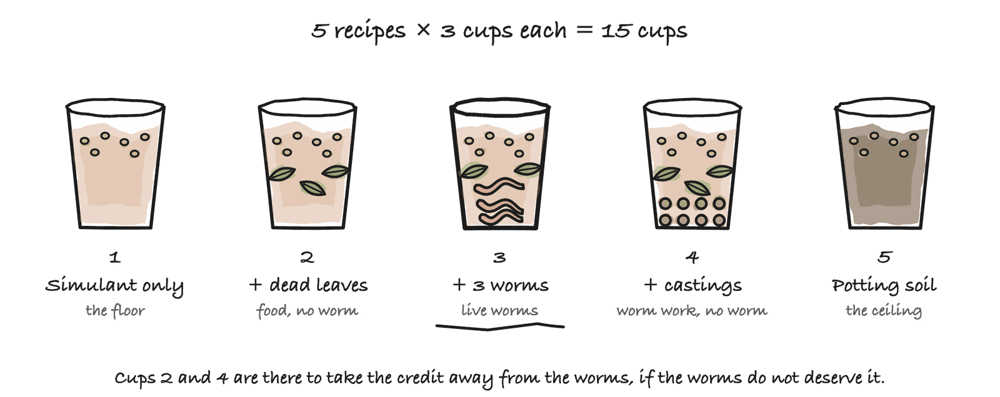
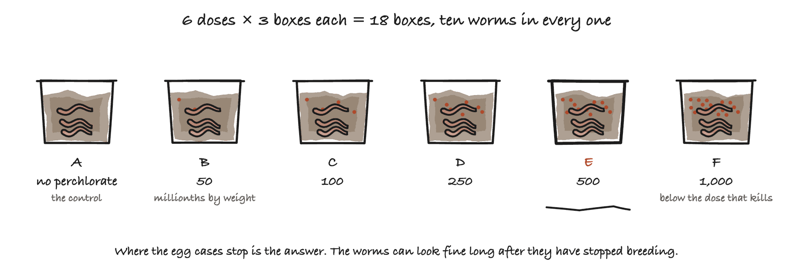
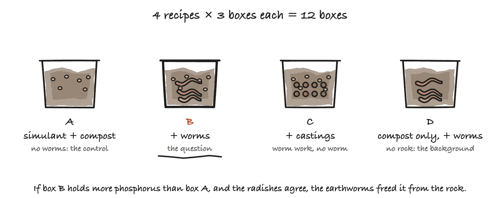

Would your lab have room for three experiments?
This project has spent a year on one question: how would you make soil on Mars? It has got as far as a laptop and a public database can take it, and three of the answers now have to be measured rather than looked up.
All three experiments are finished on paper. The protocols are written, the blank data sheets exist, and the analysis has been rehearsed against invented numbers, so the only thing missing is somewhere to run them. This is an entry for the 3M Young Scientist Challenge 2027.
The most important thing first: no experiment here involves any genetic modification. All three are earthworms in boxes on a shelf, the kind sold for a garden. BSL-1 throughout. Nothing is engineered, transformed or built.
What we would be asking of you
| Experiment 1 | Experiment 2 | Experiment 3 | |
|---|---|---|---|
| The question | Can earthworms turn Martian regolith into soil? | How much perchlorate can an earthworm stand? | Does an earthworm free phosphorus from Martian regolith? |
| Organisms | Eisenia fetida, red wiggler compost worms from a garden supplier | the same | the same |
| Biosafety | BSL-1, or none at all. These are sold for gardening | the same, plus five grams of sodium perchlorate, an oxidiser | the same |
| Space | 15 cups on half a metre of shelf, under a light | 18 boxes on half a metre of shelf, in the dark | 12 boxes on half a metre of shelf |
| How long | seven weeks | nine weeks, mostly waiting | ten weeks |
| Student on site | short measuring sessions, a couple of days a week | two short sessions, at week two and week nine | a short session a week |
| From the lab | a drying oven, a scale to 0.1 g, a pH meter, a grow light | a scale to 0.01 g, and somewhere to lock a small bottle of perchlorate | a drying oven, a scale to 0.01 g, and a soil phosphorus kit or twenty minutes on a spectrophotometer |
| We bring | cups, simulant, seeds, strips, cotton, worms | boxes, compost, worms | boxes, simulant, compost, castings, seeds, worms |
| Waste | ordinary compost. The worms go home to a garden bin | the same, except the top boxes, which leave as low-level chemical waste | ordinary compost. The worms go home to a garden bin |
Why these three, and not others. A Mars colony has to grow its own food. Martian regolith is not soil. So this project designed a way to turn one into the other, in five steps, and three of those steps rest on things nobody has checked. Whether earthworms make soil out of regolith at all, which is step 5. How clean the regolith has to be washed for them, which is step 1. And whether they free any of the phosphorus locked in the rock, which would change step 2. These three experiments check them.
Experiment 1: can earthworms turn Martian regolith into soil?
| What we are looking at | What it says |
|---|---|
| The assumption | That adding life to dead regolith turns it into soil. Nobody has shown that it does |
| What is set up | 15 cups, five recipes, three cups each: bare MGS-1 simulant; simulant and food; simulant, food and worms; simulant, food and worm castings with no live worm; and ordinary potting soil |
| What happens | For four weeks the regolith itself is measured every week. Then radish seeds go into every cup, and three more weeks of growing |
| What decides it | The dried weight of the seedlings on day 21. If the worst worm cup still weighs more than the best no-worm cup, the worms made the soil. If the two overlap, the report says so |
Read the full run sheet for Experiment 1 →, the whole thing written out as it would be done at your bench, including what it costs and what we would expect to see.

Experiment 2: how much perchlorate can an earthworm stand?
| What we are looking at | What it says |
|---|---|
| The assumption | That the wash in step 1 can get the regolith clean enough for earthworms. Nobody has published how clean that is |
| What is set up | 18 takeaway boxes of compost, six doses of perchlorate from none to 1,000 millionths by weight, three boxes each, ten worms in every box |
| What happens | The boxes sit in the dark for two months. At day 14 the survivors are counted. At day 60 the egg cases are counted |
| What decides it | The dose at which the egg cases collapse. Worms can look healthy for months at a dose that has quietly stopped them breeding, so the egg cases are the number, not the survivors |
Read the full run sheet for Experiment 2 →. It is the cheapest thing in the project, and it is the one we would pick if there is room for only one.

Experiment 3: does an earthworm free phosphorus from Martian regolith?
| What we are looking at | What it says |
|---|---|
| The assumption | That step 2 needs a bacterium to free the phosphorus locked in the rock. Earthworms grind grit and carry acid-making microbes, and nobody has measured whether they free any of it themselves |
| What is set up | 12 boxes, four treatments, three boxes each: simulant and compost with no worms; with worms; with castings but no live worm; and compost alone with worms |
| What happens | Eight weeks on the shelf, then every box is tested for available phosphorus in one session. Then radish seeds go in, and three weeks later the seedlings are weighed |
| What decides it | Whether the worm boxes hold more available phosphorus than the no-worm boxes, and whether the radishes agree. A test kit says what the chemistry sees. A radish says what a root can get, and the radish wins |
Read the full run sheet for Experiment 3 →. Either answer is worth having, and neither is written down anywhere.

The two things you would have to decide
| The decision | Where we can be flexible | |
|---|---|---|
| 1 | Whether a minor can work in your lab, and how | Entirely. This is a policy question, not a scientific one. A named supervisor, training, a waiver, restricted hours, or an adult doing any step you would rather a student did not. “Only under direct supervision” or “only on Saturdays” is a yes as far as we are concerned |
| 2 | Whether five grams of sodium perchlorate can be kept and weighed | Somewhat. If it is a problem, Experiment 2 can be dropped and the other two still stand on their own. But it is the one that decides the most |
What we are not asking for, and what you would get
| We are not asking for | |
|---|---|
| Funding | we buy and bring all our own materials |
| Your time designing anything | the protocols, the data sheets and the analysis code are already written |
| A research programme | three short experiments, brief visits, and then we are out of your way |
| All three | any one of them is worth running on its own |
You would get BSL-1 experiments run to a written protocol, with the data and the results public, including two that nobody has published before. Credit in any form you like, or none at all if you would rather not be named.
The protocols, exactly as they would be run: Experiment 1 · Experiment 2 · Experiment 3
Saanvi Pagadala · Granite Bay, CA